Main Level
2,038 SF
Upper Level
1,244 SF
Lower Level
2,038 SF
Garage
1,390 SF
Breezeway
165 SF
Decks
1,234 SF
Roof Pitch
6:12 / 8:12
Log Spec
Full-round
276 GCR 480 — siting
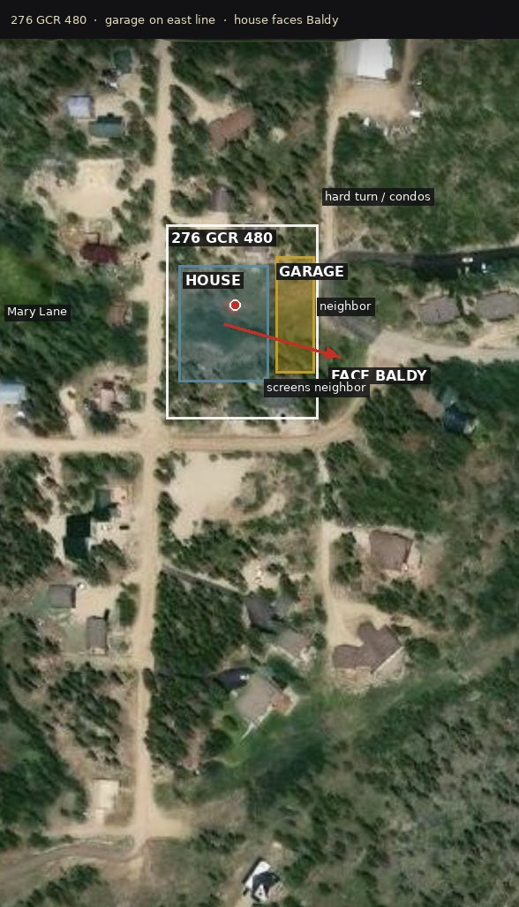
Site
Aerial — your pin
1 acre. Closed June 4, 2026. Not Lakeridge Lot 31.
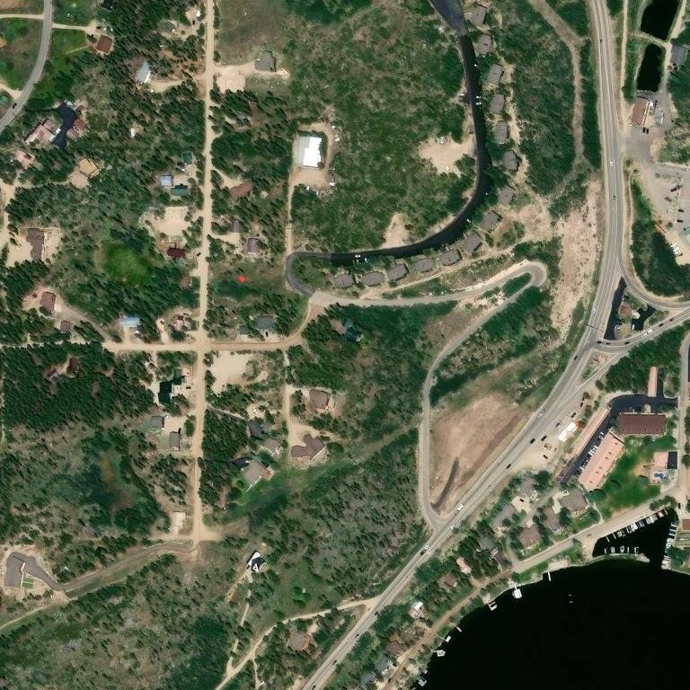
Public map
No survey topo on file. This is your aerial plus the siting call. Garage hugs the right line. House looks at Baldy.
Sheet 1
A-01 — Cover (3D Perspective)
Original CAD after the watercolor.

Original
Two-story main log volume with walk-out under a full-width deck. ONE tall chimney on the right of the main gable. Cathedral glass in that gable. Garage is off to the right of this view, not the hero. Scale: 3/8" = 1'0"
A-02 Front and Rear — watercolor, then CAD
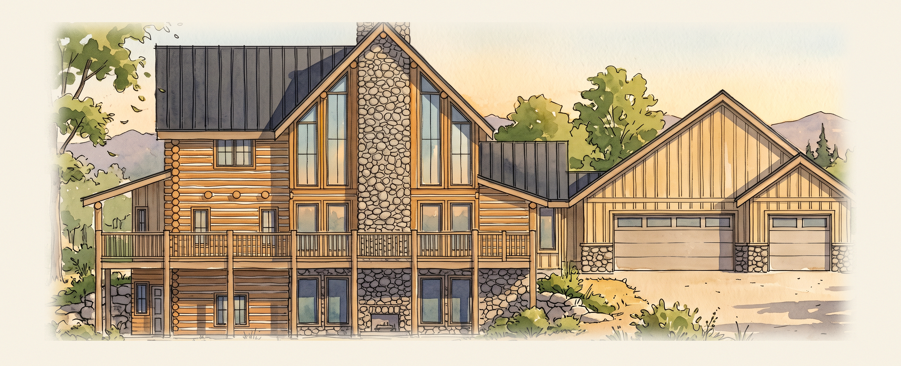
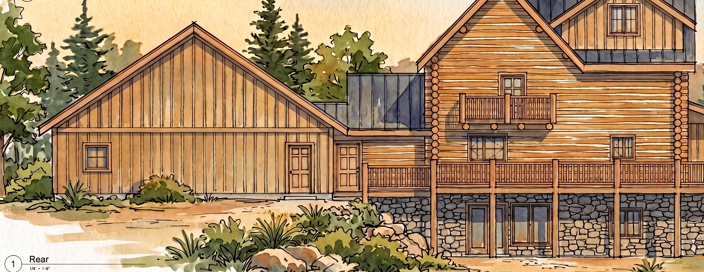
Sheet 2
A-02 — Front & Rear Elevations
Original CAD after the color elevations.

Original
Front: Grade Field Verify noted at base. Rock Veneer on lower level. Rock Chimney ×2. Board and Batten on garage gable. Two overhead doors with Rock Veneer bases.
A-03 Right and Left — watercolor, then CAD
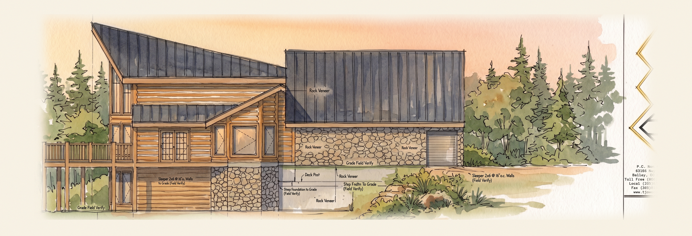
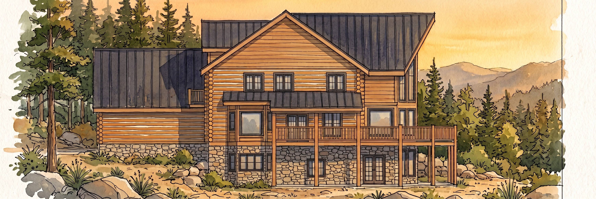
Sheet 3
A-03 — Right & Left Elevations
Original CAD after the color elevations.

Original
Right side shows garage as a separate lower wing. 8:12 pitch on bedroom/loft wing, 12:12 on a secondary gable. Left side exposes the walk-out lower level step down.
A-04 Lower — watercolor, then CAD
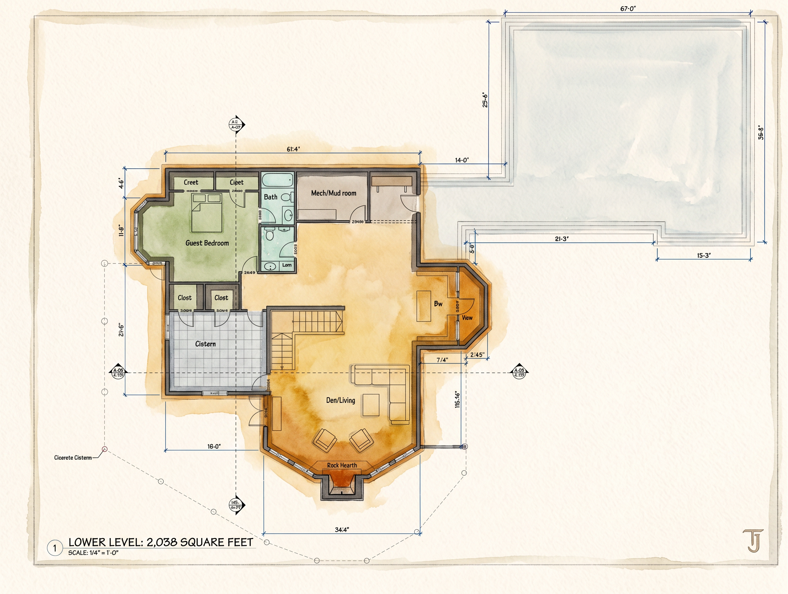
Sheet 4
A-04 — Lower Level Floor Plan
2,038 SF. Guest bedroom, guest bath, mud / mech, den, cistern, octagon bay.

Original
Scale 1/4" = 1'0". Exterior overall: ~40'×40' main log shell + octagonal front bay. Concrete cistern. Two closets on guest bedroom. Walk-out doors front and side.
A-05 Main — watercolor, then CAD
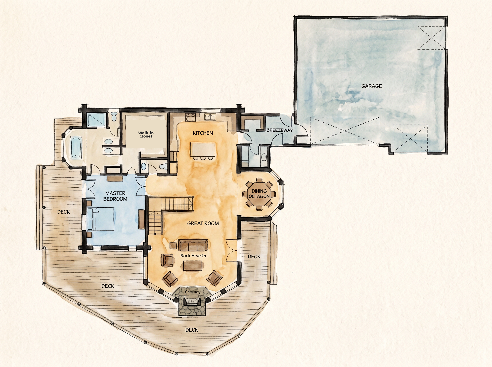
Sheet 5
A-05 — Main Level Floor Plan
2,038 SF main + 165 SF breezeway + 1,390 SF garage + 1,170 SF decks.

Original
Scale 1/4" = 1'0". Rock hearth and rock chimney in great room. Octagonal dining bay. 6" log posts. Master with soaking tub. Stair to upper and lower. Garage connected by breezeway.
A-06 Upper — watercolor, then CAD
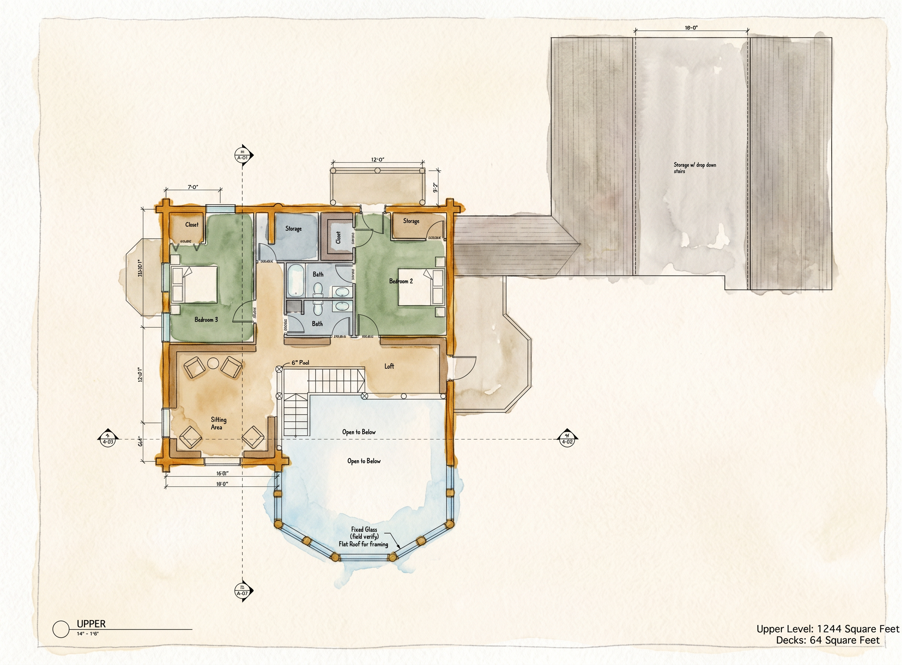
Sheet 6
A-06 — Upper Level Floor Plan
1,244 SF + 64 SF deck. Original sheet.

Original
Scale 1/4" = 1'0". Original upper. Open to Below loft. 6" post. Storage above garage. Sitting area left. Bedroom 2, Bedroom 3, full bath.
A-06 Option 9 — watercolor, then CAD
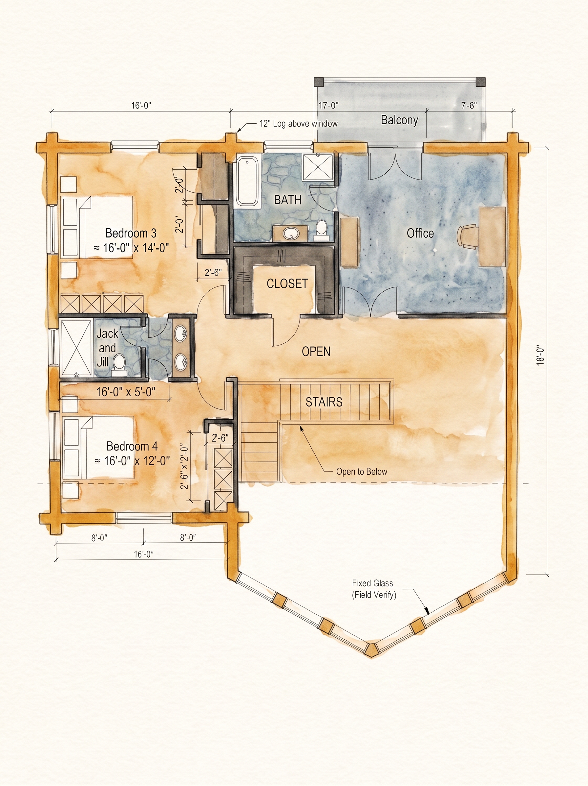
Option 9
A-06 Upper — bath fixtures from the red pen
Closest we have to the PowerPoint intent. Original A-06 above is untouched.
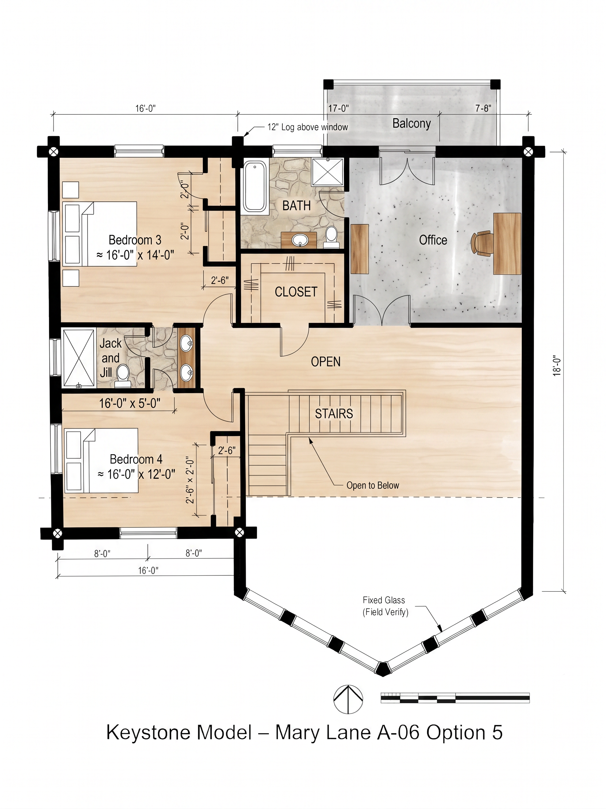
Option 9
Bath: tub on the west wall, sink in the middle, toilet on the east. Closet south of the bath, door from the OPEN loft. No door into the office. Jack and Jill takeoff is still 16'-0" × 5'-6". Bedroom 3 ≈ 16'-0" × 14'-0". Bedroom 4 ≈ 16'-0" × 12'-0". Desks 2'-6" × 2'-0".
A-07 Roof — watercolor, then CAD
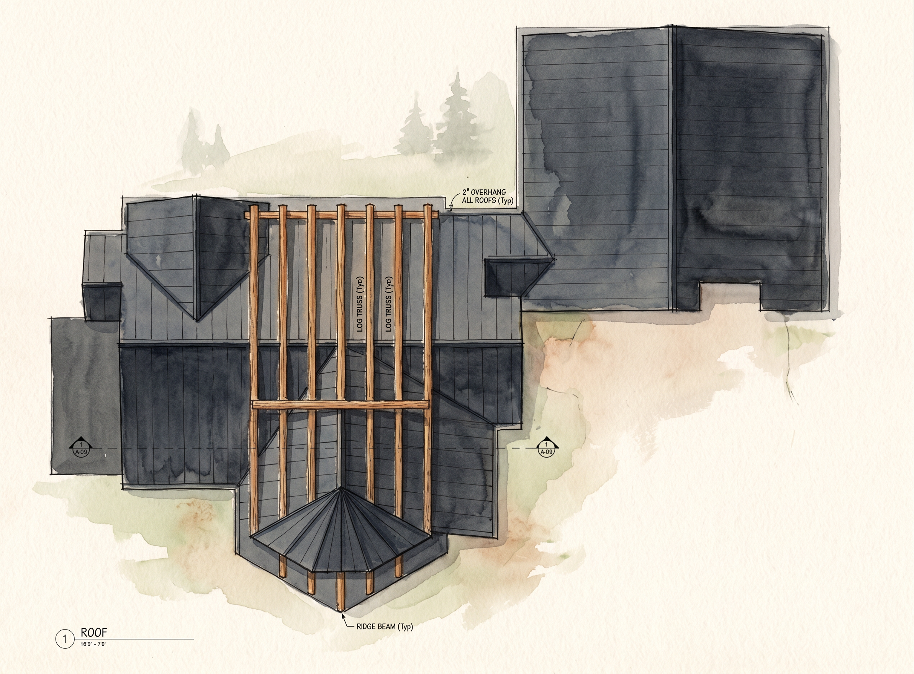
Sheet 7
A-07 — Roof Plan
Log ridge beams, valley lines, 2" roof overhang typical.

Original
48" log ridge beam (Typ). 2" overhang at eaves. Ridge directions: primary N-S on main gable, secondary ridge over loft gable, tertiary over breezeway. Garage roof separate.
A-08 Joist — watercolor, then CAD
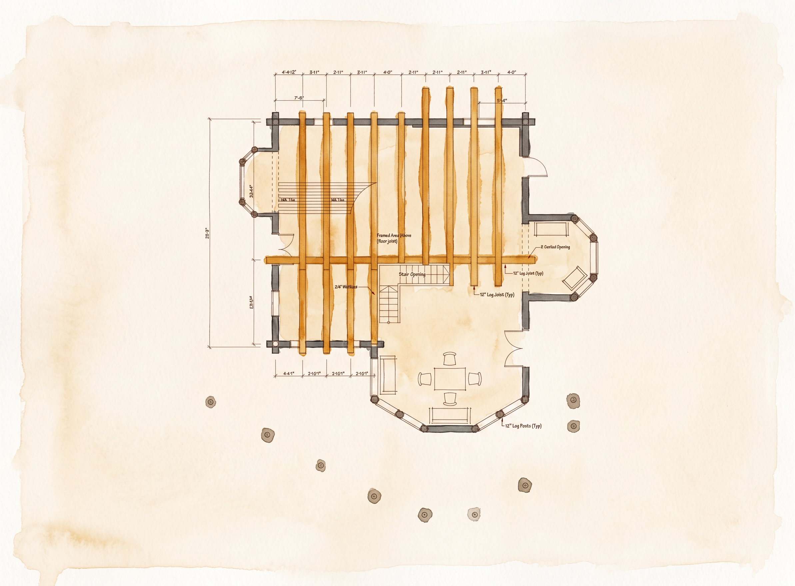
Sheet 8
A-08 — Floor Joist Plan
Poured pier foundation. 6" log floor joists typical.

Original
6" log floor joist (Typ). 10" log tie (Typ). Poured pier foundation per structural. Framed opening for stair. Arched opening noted at dining bay.
A-09 Sections — watercolor, then CAD
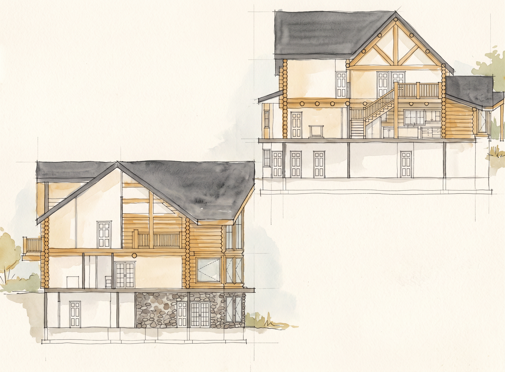
Sheet 9
A-09 — Cross Sections 1 & 2
Section 1 through great room. Section 2 through master and guest, walk-out below.

Original
Sections reveal three full stories: lower walk-out, main, upper loft. Log columns visible through all levels. Deck cantilever over lower level. Interior stair connects all three.